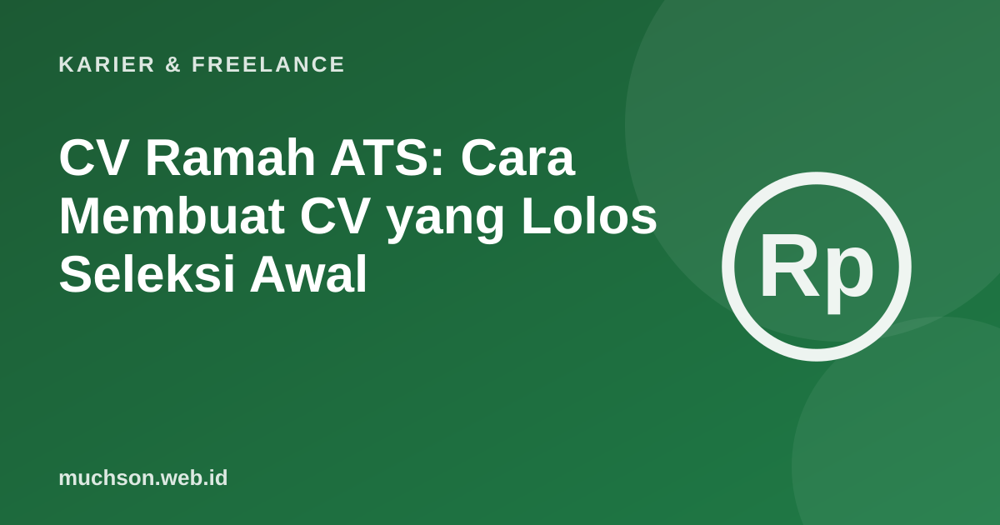

Beranda › Artikel › Karier & Freelance
Karier & FreelanceCV Ramah ATS: Cara Membuat CV yang Lolos Seleksi Awal
CV Anda sering dibaca dua pihak: sistem pelacak pelamar (ATS) yang menyaring, lalu manusia yang menilai. CV yang baik bisa dibaca mesin dan cukup menarik bagi manusia dalam hitungan detik.

Cara kerja ATS secara umum
Aturan format
Isi yang kuat
- Sesuaikan dengan lowongan. Gunakan istilah yang sama dengan deskripsi pekerjaan, selama benar-benar Anda kuasai.
- Tunjukkan hasil. "Mengurangi waktu muat 40%" lebih kuat daripada "bertanggung jawab atas performa".
- Mulai kalimat dengan kata kerja. Membangun, memimpin, merancang, menurunkan.
- Ringkas. Biasanya satu sampai dua halaman.
- Jujur. Jangan menambahkan keahlian yang tidak Anda punya.
Jangan berlebihan
Mengisi CV dengan kata kunci tanpa substansi mudah terlihat oleh recruiter. Sistem hanya langkah awal; yang menentukan adalah apakah Anda terlihat cocok untuk pekerjaannya.
Tanya jawab
Apakah semua perusahaan memakai ATS?
Banyak perusahaan menengah dan besar memakainya, perusahaan kecil sering tidak. Format sederhana tetap aman untuk keduanya.
Perlukah foto di CV?
Bergantung pada kebiasaan dan permintaan perusahaan. Banyak sistem tidak membutuhkannya, dan sebagian perusahaan justru menyarankan tanpa foto.
Bolehkah memakai AI untuk menulis CV?
Boleh untuk merapikan dan memberi ide, tetapi isi harus akurat dan sesuai kenyataan. Anda harus bisa menjelaskan setiap poin saat wawancara.